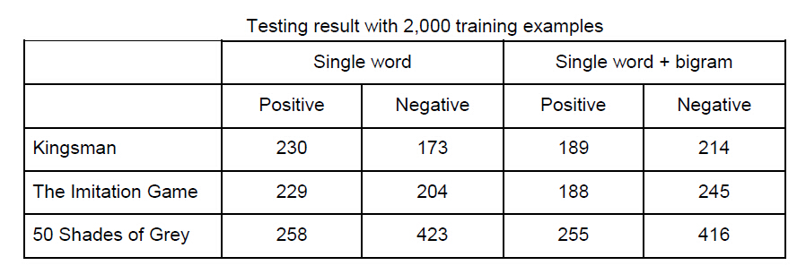
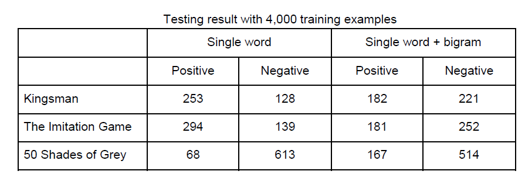
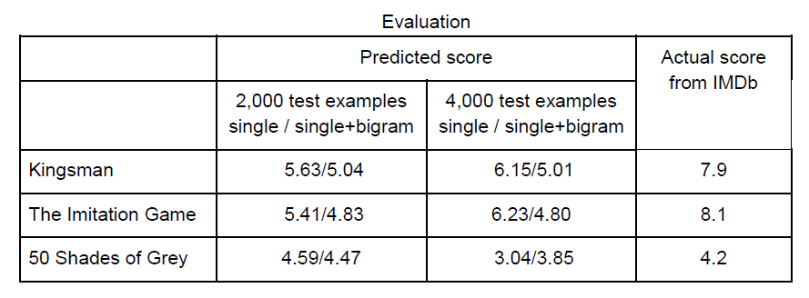

Final Project for Northwestern University EECS 349 Machine Learning
Team member: Chenxing Wu, Hanhong Lu, Zhe Chen
Movie on Tweets is a IMDb movie score predictor, using movie's tweets retrieved from Twitter. Our task is to analyze the feedback of a movie (either positive or negative) based on tweets that have mentioned the movie, for example, using hashtags.
Twitter is one of the most popular social media where people post comments about their everyday life.
Users share their reviews about a movie on Twitter which possibly encourage or discourage their followers’ motivations of watching the movie. Since Twitter restricts each tweet to be less than 140 characters, users’ comments tend to be straightforward. In addition, because of its huge influences, many movies have started to include a hashtag in their trailers that tell people to tweet about them to attract social attention. Therefore, Twitter has become a great platform to examine people’s feedback on a movie. By analyzing the sentiment of thousands of tweets by people who have watched the film, a general review of the movie can be made. Users can then use the review to decide whether or not to watch the film.
We choose Naive Bayes Network algorithm as our approach to this problem.
We use Large Movie Review Dataset from Stanford University (http://ai.stanford.edu/~amaas/data/sentiment/) as training dataset.
As for testing dataset, we use Twitter API and Python to retrieve tweets from Twitter by search keywords of a movie. After preprocessing and filtering spam and irrelevant tweets, we use this tweets to test our Naive Bayes Network Classifier.
We built tweets datasets of Kingsman, Fifty Shades of Grey, and The Imitation Game from Twitter.
Check out our test movie datasets in here.
The result of 10-fold cross validation is shown as follows.
| Features | Single Words | Single Word + Bigram | |
|---|---|---|---|
| Precision | 0.855773972033 | 0.920307652833 | |
| Positive | Recall | 0.888353508419 | 0.797222480181 |
| F-measure | 0.870217714806 | 0.853164955523 | |
| Precision | 0.882733702769 | 0.821094050964 | |
| Negative | Recall | 0.85220049602 | 0.931654782064 |
| F-measure | 0.865545492618 | 0.871933113784 | |
We can see from the table above, that adding bigram increases the performance slightly, but not very obvious. This maybe because when adding features to classifier, some of them are useless. These irrelevant features create noise to the classifier, and thus not improving the accuracy as expected.
After retrieving and pre-processing tweets from Twitter, we test our Naive Bayes Network Classifier with 3 different movie datasets. We have successfully retrieved our test data as 2000 samples for each movie from Twitter using Twitter API. In python, we use filter named langid to filter language other than English, and then get rid of examples with links to avoid unnecessary information like ads. Results in details are shown in next Section.
The test results of 3 different movies are shown as follows.
  Master student of Electrical Enginnering.
chenxingwu2014@u.northwestern.edu
Master student of Computer Science.
hanhonglu9.2014@u.northwestern.edu
Master student of Computer Science.
zhechen2014@u.northwestern.edu